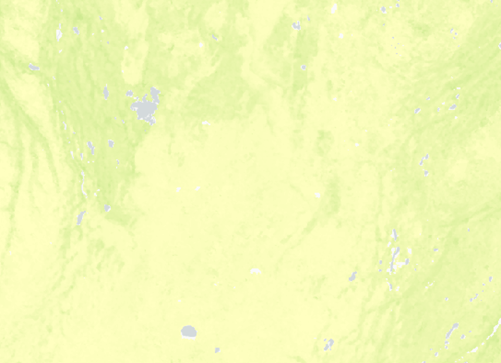

Dataset: Standard deviation NDVI (Normalized Difference Vegetation Index)

| Surface ID | Description | Metadata |
|---|---|---|
| 17 | Standard deviation NDVI within 300m | Open metadata XML |
| 18 | Standard deviation NDVI within 500m | Open metadata XML |
| 19 | Standard deviation NDVI within 1km | Open metadata XML |
NDVI quantifies photosynthetically active vegetation by measuring the difference between near-infrared
(which vegetation strongly reflects) and red light (which vegetation absorbs). NDVI values range from +1.0 to -1.0.
Areas of barren rock, sand, or snow usually show very low NDVI values (for example, 0.1 or less).
Sparse vegetation such as shrubs and grasslands or senescing crops may result in moderate NDVI values
(approximately 0.2 to 0.5). High NDVI values (approximately 0.6 to 0.9) correspond to dense vegetation such as that found
in temperate and tropical forests or crops at their peak growth stage.
Negative values of NDVI (values approaching -1) correspond mainly to water and ice and snow cover.
NDVI was derived from the Vegetation Indices (MOD13Q1) product of the Terra Moderate Resolution
Imaging Spectroradiometer (MODIS) with 250 m x 250 m resolution (K. Didan, 2015).
MOD13Q1 16-day composite vegetation indices provide one NDVI value every 16 days allowing the composition of gap-free temporal-series.
The per-pixel compositing algorithm is described in the MOD13Q1 product user guide [1].
The MOD13Q1 product includes the following relevant bands, among others: a) NDVI and b) quality assessment (QA) information.
More information can be found elsewhere [2].
Per-pixel Quality Assessment (QA) band provides information about how reliable the acquired data is and allows for
removal of pixels with less accuracies. QA values of 0 and 1 mean a good quality level, whereas values of 2 and 3 represent
pixels covered by ice, snow or clouds, which are discarded. Water features have typically negative signal values for NDVI,
so they add noise to the negative edge when conducting spatial analysis. In order to identify and remove the influence
of water bodies in the analysis, the Land Water Mask derived from MODIS and SRTM (MOD44W) were used
to filter out the water bodies from the NDVI maps [3].
The data processing strategy included the following steps: